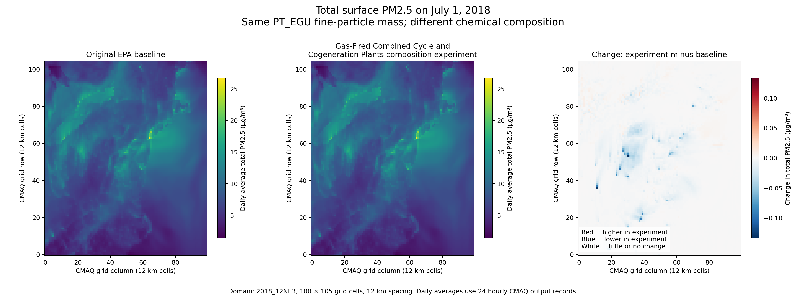
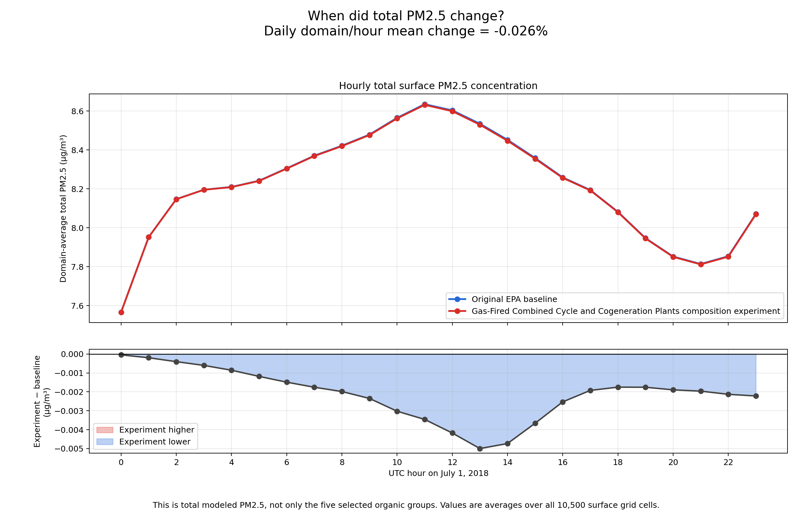

The question
If PT_EGU fine-particle emissions keep the same source-by-source and hour-by-hour mass but use the EPA SPECIATE profile for gas-fired combined-cycle and cogeneration plants, how does CMAQ's predicted aerosol composition change?
Modeling system
I compiled and ran CMAQ v5.5 with the CRACMM2 chemical mechanism and STAGE deposition on a 12 km Northeast U.S. domain. The benchmark and experiment each covered 24 hours on a 100 × 105 grid with 35 vertical layers.
Matched sensitivity design
Results
The five selected primary-organic aerosol groups increased by approximately 20.23% in the combined domain-and-hour mean. CMAQ's total PM₂.₅ diagnostic changed by only −0.026%. The experiment therefore changed chemical composition substantially while leaving domain-average total fine-particle concentration essentially unchanged.
Local daily-average changes were larger than the domain mean, ranging from a 0.1331 µg/m³ decrease to a 0.0188 µg/m³ increase. This is why the interpretation combines chemical, temporal, and spatial diagnostics.
Figures


Scientific interpretation
- A large relative change in a small chemical component does not necessarily create a large change in the total.
- Preserving emitted mass does not guarantee identical atmospheric concentrations because species behave differently after release.
- Domain averages can hide localized positive and negative responses.